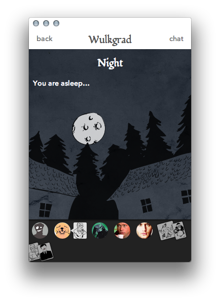
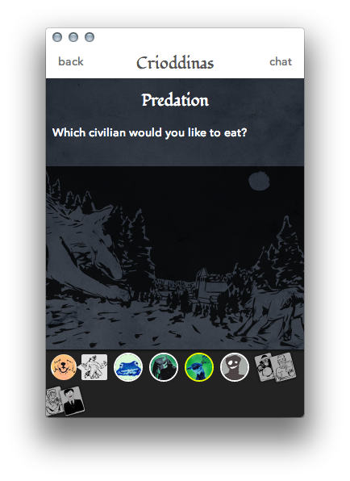
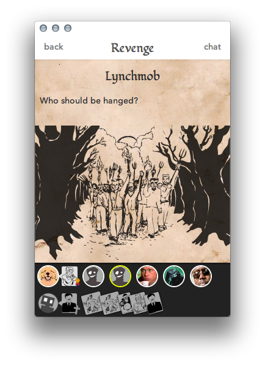
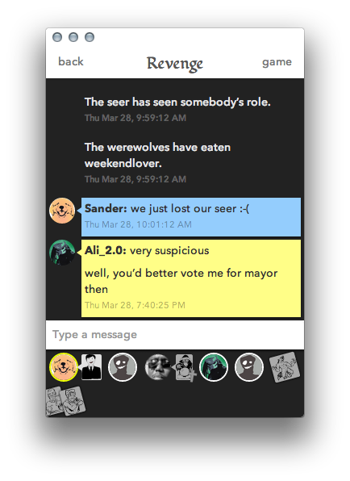

In Lunacy, you and your friends assume the roles of townsfolk. However, hidden among the innocent civilians are werewolves. Every night, the werewolves devour one of the civilians, and every day the civilians elect to hang one of their own, in a desperate attempt to save themselves.
Fortunately, the civilians aren’t completely helpless. Some of the townsfolk, such as the hunter, the seer and the priest have abilities of their own that they can use to kill or unmask the werewolves, or protect their comrades.
Locked in this struggle for survival, only your wits and luck can save you.
Note: the official Lunacy game has gone offline. Feel free to use the source code to create a new server. Mail Sander to discuss this.
Screenshots

About Lunacy
Credits
Development: Sander Dijkhuis
Artwork and text: Alexander Ariese
Based on the original games by: Andrew Plotkin (Werewolf game), Dimma Davidoff (Mafia game)
With contributions by: Simon Willems, Rosalie Jansen, Valeria Boshnakova
Open source
Lunacy’s source code is licensed under an Apache 2.0 license. The artwork currently used in Lunacy is not available under an open source or free software license.